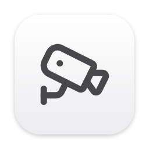
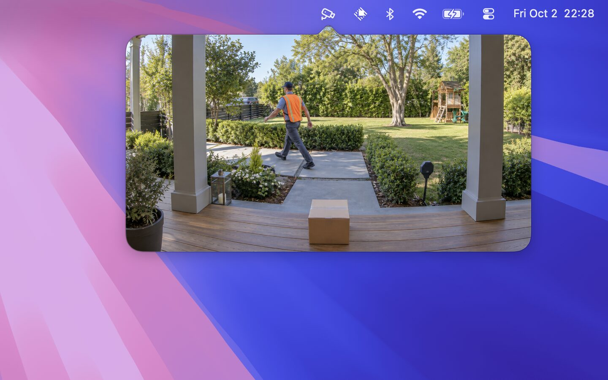

Your IP camera, one click away in the Mac menu bar.
Download on the Mac App Store →
macOS 14 or later
Click the menu bar icon to watch. Move the pointer over the video to reveal the camera switcher and settings. Closing the view stops streaming. You can save several cameras and choose which one to view.
Peephole supports Basic and Digest authentication. It does not support audio playback, recording, pan, tilt or zoom controls, or cameras that provide only MJPEG or HTTP video.
Peephole connects directly to the cameras you add. It has no account, cloud service, analytics or tracking. Passwords are kept in the macOS Keychain. Read the Peephole Privacy Policy.
For help or feedback, email soner@sonereker.com. Include your macOS version, camera model and any error message. Please do not send camera passwords or stream URLs containing credentials.